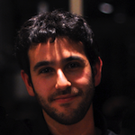
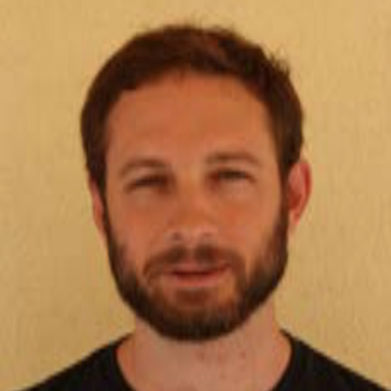

Abstract
The aim of the workshop is to introduce the participants to the concept of linked data and to a selection of data curation tools that can be used for re-using and integrating data from across data silos (including examples from tangible and intangible heritage), including a demonstration of how semantically map them. The tutorial will make use of open source tools and existing standard resources for from the cultural heritage domain in order to demonstrate this process. Emphasis will be laid on the transformation of existing resources (CSV, XML etc.) into RDF, through the use of data transformation mapping tools. The workshop will last a half day and it will promote a hands-on knowledge of several important tools that are daily used by professionals in the field. Participants will finish the workshop with a greater familiarity with both the overall workflow and strategy for creating linked data but also a basic hands-on knowledge of a number of different software and data tools that would allow them to create and manipulate their own linked data by taking advantage of existing resources in the different communities (CH, public administration, GIS, etc.). They will also have been introduced to the role of Ontologies in integrating data and how to use a mapping tool to harmonise data at the schema level to a formal ontology standard.Format
The afternoon will begin with a brief overview of the overall workflow proposed for generating linked data and what benefits potential creators of this data should expect. The session will then break down into two distinct parts. The first segment will introduce data cleansing and preparation from heterogeneous sources, both methodologically and as regards the use of a particular tool. The second segment will introduce will introduce data mapping to an ontology to generate RDF encoded data: how to go about it both conceptually and with regards to a specific tool.
The first session will present to the participants the possibilities given by software such as OpenRefine to clean and enrich the data. Following a brief introduction where the participants will be presented with the core functionalities of the tool, the workshop is going to focus on the refinement and enrichment on a series of reusable examples, teaching the participants common formulas for aligning their data with their own schema or with external source typically used by the cultural heritage community.
The data mapping and RDF transformation session will be taught using CIDOC CRM as the target ontology and the 3M data mapping software, as the mapping and transformation tool. This session will introduce participants to the functionality of ontology for data integration/transformation and teach participants both conceptually how to begin the analysis task of mapping data to an ontology as well as how to actually implement this mapping in the 3M tool leading to data transforms into RDF.
Topics
The workshop focuses on the following topics and related subjects:
-
Data Cleaning
- Merging/splitting
- Clustering
- GREL
- Cell Crossing
-
Data Enrichment (Reconciliation & API)
- Wikidata
- Geonames
- VIAF & ORCID
- Getty AAT
- Europeana
-
Data Transformation
- Formal Ontology / CIDOC CRM
- Data Mapping Strategies
- Creating Schema to Schema Maps
- Creating URI Generator Policies
- RDFification
Length
The workshop will take place on Tuesday the 23 at 14:00 and will last for four hours. It is split into two main sections. The first one will cover the basic cleaning and enrichment tasks, while the other is going to present mapping strategies and tool for semantification of the data.
Audience
The workshop is aimed at individuals working in Cultural Heritage and Linked Data consumption communities, specifically professional from the GLAM (Galleries, Libraries, Archives, and Museums) community. Additionally, we expect to attract newcomers who are interested in transforming, enriching, and sharing their data. Participants will be introduced to the problems and tools by using a pre-selected dataset, but they can bring their own data to further test and discuss personalised solutions for their need. Participants should bring their own laptop.
Presenter
Nicola Carboni
CNRS MAP, Marseille - France
Nicola is an Early Stage Researcher fellow within CNRS. He received his Bachelor degree in Cultural Heritage from the University of Pisa in 2010, and an international Master degree in Digital Library Learning from the joint consortium of the Tallinn University, Oslo and Akershus College of Applied Science and the University of Parma in 2013. He joined afterwards, as data curator & modeler, the Trentino Open Data project where he collaborated with a multidisciplinary team for opening the public administration data. His research interests are Data Management, Semantic Web, Cultural Heritage and Digital Preservation.
George Bruseker
Forth, Heraklion - Greece
George works in the domain of semantic representation of cultural heritage data using formal ontologies, particularly, CIDOC CRM. He was an Experienced Researcher in the Marie Curie project ITN Digital Cultural Heritage, where he worked on the issues of semantic representation of 3 and 4 dimensional models. In collaboration with other fellows, he produced a number of publications on the issue of documenting data provenance for digital models from the digitization process through to virtual reconstructions. Presently, George works in the Parthenos project on conceptualizing the semantic framework for a cross disciplinary research infrastructure.